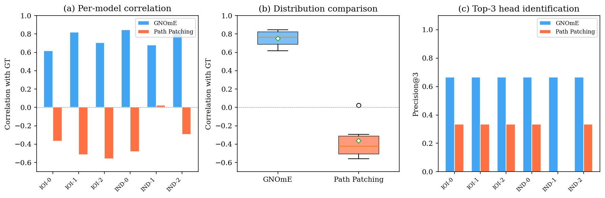
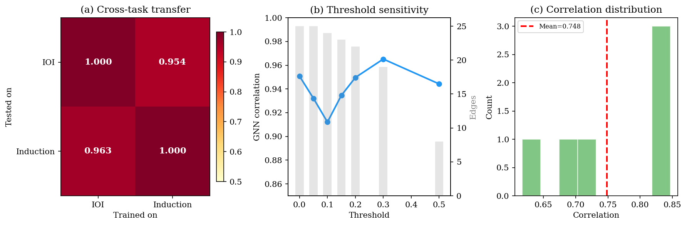
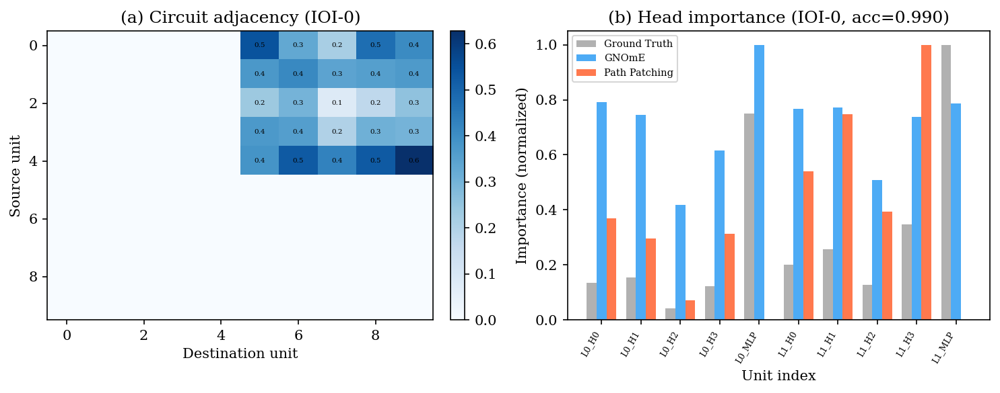

Graph Networks for (Mechanistic) Explicability — Zero-Query Circuit Extraction from Trained Neural Networks
GNOmE extracts the model's computational graph from a single forward pass, then reads it with a GNN to predict per-head importance — zero model interventions required.
Query cost: O(1) vs Path Patching: O(nlayers × nheads)
| Method | Correlation (r) | Precision@3 | Query Cost |
|---|---|---|---|
| GNOmE | 0.748 ± 0.082 | 0.667 | O(1) |
| Path Patching | −0.365 ± 0.218 | 0.278 | O(nL·nH) |
| Transfer Direction | Correlation |
|---|---|
| IOI → Induction | 0.954 |
| Induction → IOI | 0.963 |
| LOO Cross-Validation | 0.864 ± 0.201 |
| Threshold | GNN Correlation | Edges |
|---|---|---|
| 0.00 | 0.951 | 25 |
| 0.10 | 0.912 | 24 |
| 0.20 | 0.950 | 22 |
| 0.30 (optimal) | 0.965 | 19 |
| 0.50 | 0.944 | 8 |



@article{singh2025gnome,
title={GNOmE: Graph Networks for Mechanistic Explicability},
author={Singh, Sehaj},
year={2025}
}